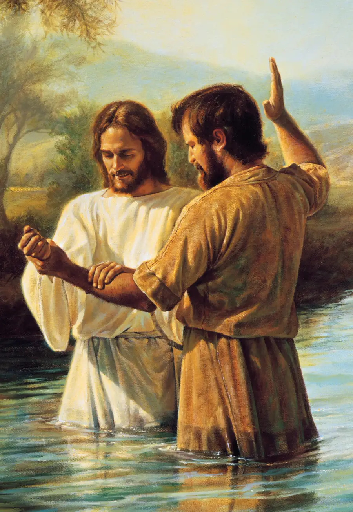

Què és el baptisme?
El baptisme és la primera ordenança de l'evangeli de Jesucrist. És un pacte o acord sagrat entre tu i Déu: tu promets seguir Jesucrist, i Ell promet perdonar els teus pecats i guiar-te a través de l'Esperit Sant.
El mateix Jesucrist va ser batejat per Joan Baptista al riu Jordà, donant-nos l'exemple a seguir.

Per què és important?
- És un manament de Déu: Jesucrist va ensenyar que el baptisme és necessari per entrar al regne de Déu
- Simbolitza un nou començament: Ser submergit a l'aigua representa deixar enrere la vida antiga i néixer de nou
- És un pacte amb Déu: En batejar-te, entres en una relació especial amb el teu Pare Celestial
- Obre la porta a l'Esperit Sant: Després del baptisme, reps el do de l'Esperit Sant com a company constant
Com es fa?
Seguint l'exemple de Jesucrist, el baptisme es fa per immersió completa a l'aigua, per algú que té l'autoritat de Déu (el sacerdoci). Això simbolitza la mort, la sepultura i la resurrecció de Jesucrist, i el teu propi renaixement espiritual.

Qui es pot batejar?
Qualsevol persona que tingui almenys 8 anys, que cregui en Jesucrist i que desitgi seguir-lo pot ser batejada. No hi ha requisits de perfecció — el baptisme és precisament per als qui volen tornar a començar.
Després del baptisme
El baptisme no és el final del camí, sinó el començament. Després del baptisme, reps el do de l'Esperit Sant per la imposició de mans. L'Esperit Sant et guiarà, et consolarà i t'ajudarà a prendre bones decisions al llarg de la teva vida.
Vols saber-ne més sobre el baptisme?
Els nostres missioners poden respondre totes les teves preguntes i ajudar-te a preparar-te si decideixes fer aquest pas.
Parlar amb un missioner